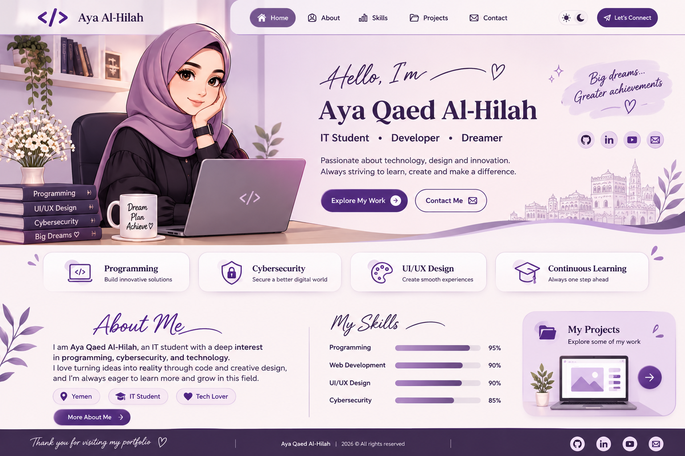

البرمجة
أحب كتابة الأكواد وبناء أفكار ومشاريع رقمية.
01 / CODEمرحباً، أنا
أؤمن أن كل فكرة جميلة يمكن أن تتحول إلى شيء مميز بالتعلم والإبداع. أتعلم، أجرّب، وأبني طريقي في عالم التكنولوجيا خطوة بخطوة.

كل يوم فرصة جديدة لأتعلم شيئاً وأقترب من هدفي.
أنا آية قايد الحيلة، طالبة في تخصص تقنية المعلومات. أستمتع باكتشاف عالم البرمجة والتصميم، وأطمح إلى تطوير مهاراتي وصناعة حلول تقنية مفيدة ومبتكرة.
هذه الصفحة نافذتي الصغيرة لأشارك اهتماماتي ورحلتي وما أتعلمه في الطريق.
مسارات أتعلم فيها وأعمل على تطوير نفسي باستمرار.
أحب كتابة الأكواد وبناء أفكار ومشاريع رقمية.
01 / CODEالاهتمام بتجربة سهلة، واضحة وجميلة للمستخدم.
02 / DESIGNاستكشاف أساسيات حماية المعلومات والعالم الرقمي.
03 / SECURITYأتعلم أدوات وتقنيات جديدة وأطوّر مهاراتي.
04 / GROWTHنماذج لمجالات ومشاريع أعمل على استكشافها وتطويرها.
تصميم صفحات ويب تجمع بين البساطة وسهولة الاستخدام.
HTML · CSS · JavaScriptاستكشاف طرق تقديم المحتوى بشكل واضح وجذاب.
Research · Wireframes · UIتطبيقات وتجارب تعليمية في مجالات التقنية المختلفة.
Learning · Practice · Ideasهذه الأقسام تعرّف باهتماماتي ومجالات تعلمي، ويمكن إضافة المشاريع المنجزة وروابطها لاحقاً.
«لا تنتظر أن تصبح خبيراً لتبدأ، ابدأ لتصبح أفضل.»
ONE STEP AT A TIMEيسعدني التواصل وتبادل الأفكار والتعلم من التجارب الجديدة.